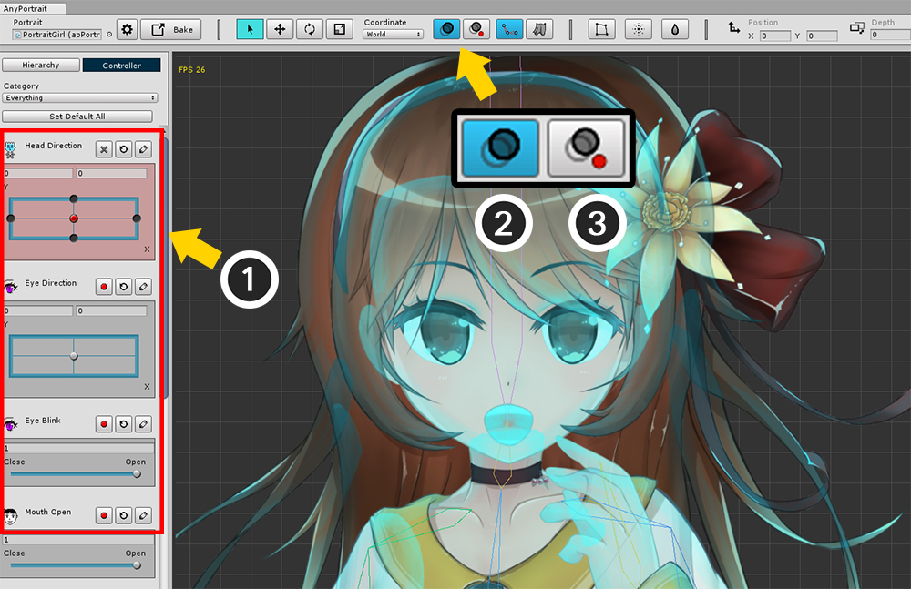
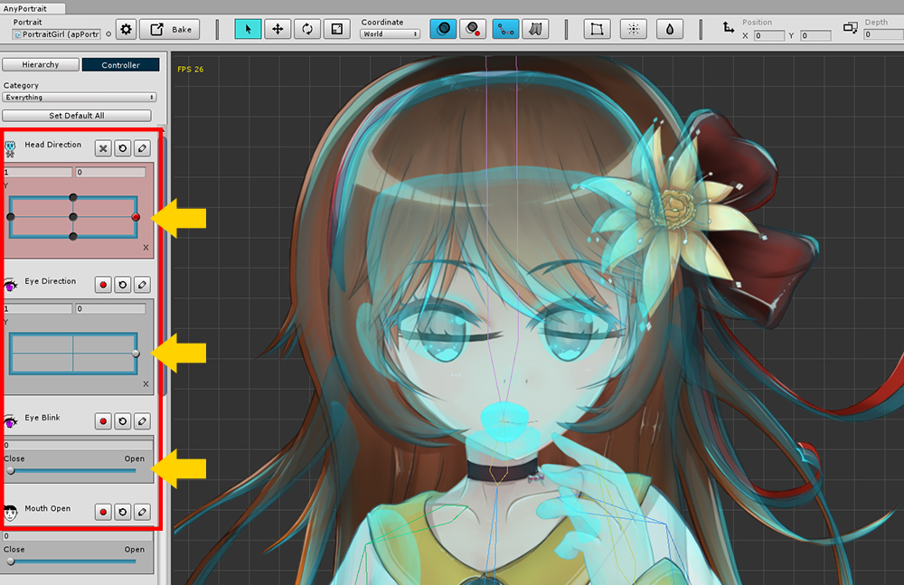
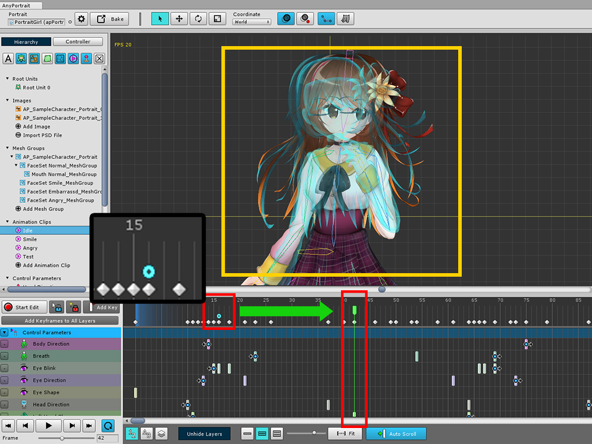
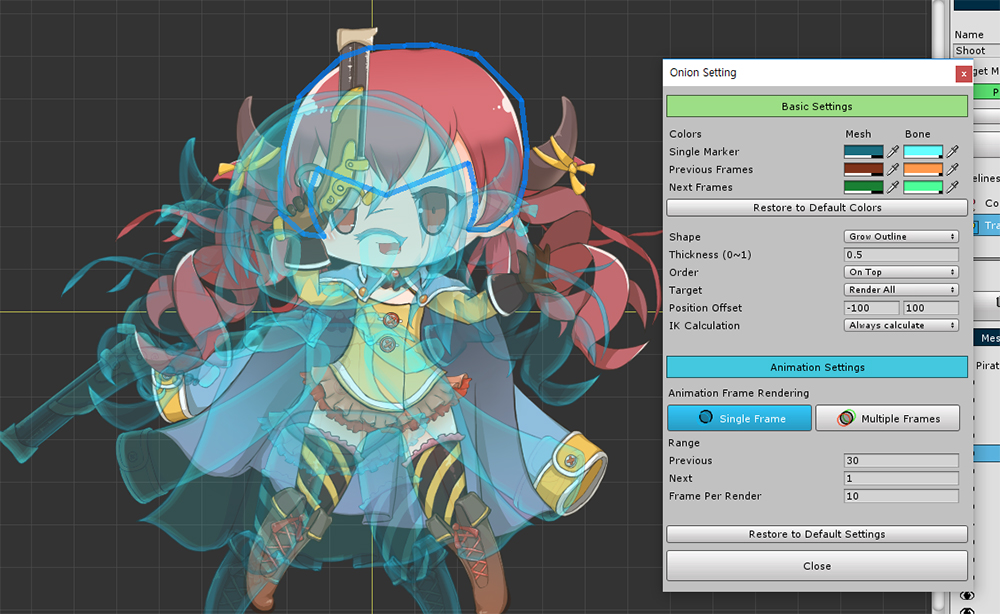
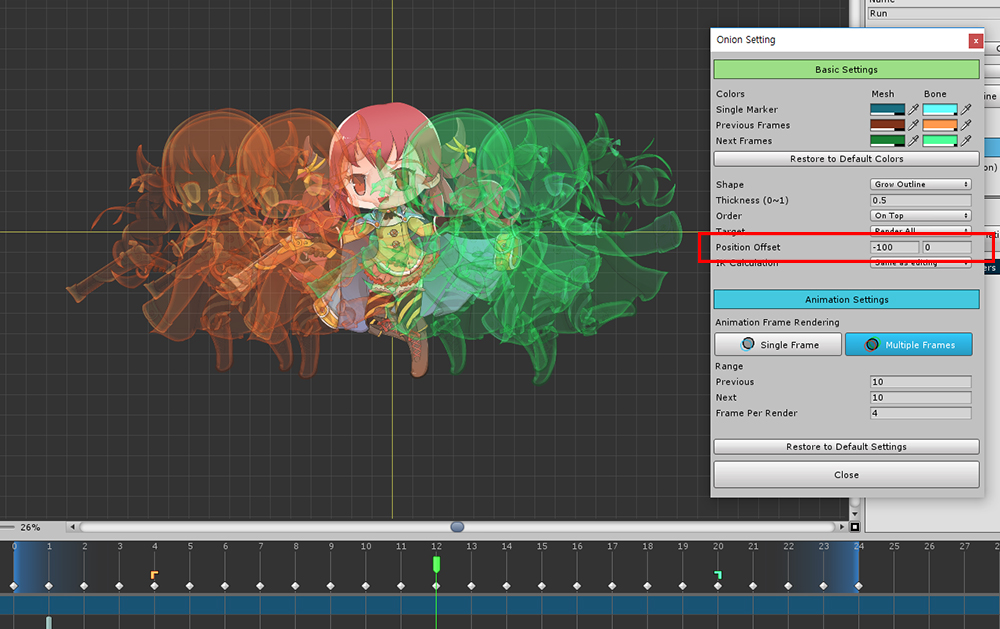

AnyPortrait > Manual > Onion Skin
Onion Skin
1.0.4
When creating an animation, you can feel like an afterimage of an animation if you put each frame on top of it.
This afterimage effect is called the Onion Skin effect.
(This name is the same as a picture overlaid on thin paper.)
With Onion skin, you can compare different frames of the animation or compare them with other states.
This page covers how to use the Onion Skin feature.

If you create a modifier with control parameters, you can use Onion Skin.
(1) Specify the control parameter value to be registered as Onion Skin.
(2) Press the button ( O ) to display Onion Skin and (3) Press Onion Skin registration button.
This will cause the current status to be registered as Onion Skin.
Onion Skin in View Menu

From AnyPortrait v1.3.0, the button to show or register the Onion Skin is transferred to View Menu.

If you turn on Show Onion Skin in the View Menu, the Onion Skin registration button appears as above.
Also, to change the settings of the Onion Skin, click Onion Skin > Settings.
Only the UI has been changed and the operation method is the same as before.

If you move the control parameter, you can compare it with the registered one.
Modifiers can be edited with Onion Skin turned on.
(Note: If you do not see Onion Skin in this state, the registered Onion Skin will be retained.)

You can also use Onion Skin for animation work.
(1) Go to the frame you want to register with Onion Skin.
(2) Turn on the Onion Skin and register.

Moving to a different frame now allows you to work with Onion Skin.
You can see the light blue icon appear on the frame registered with Onion Skin.
Advanced settings and animated onion skin

If you hold down the Ctrl and press the Onion Skin button, the setting dialog box appears.
On this dialog you can change the settings for Onion Skin.
(On Mac OSX, press the Command .)

1. Color
: Sets the color of Onion Skin. You can specify colors for single / multiple frames, meshes and bones respectively. You can reset the color values by pressing the "Restore to Default Colors" button.
2. Rendering method
- Shape : Shape to be rendered. Select Glow Outline to render the outline, Solid to make it look like a normal mesh renderer.
- Thickness : Sets the thickness ratio of the outline when rendering with Glow Outline method.
3. Rendering Order and Targets
- Order : Determines whether Onion Skin should be rendered before or after.
- Target : Determines whether to render all objects or only selected objects.
4. Position Offset : Moves by the given value and renders.
5. IK Calculation
: When in edit mode, IK calculation stops. You can choose whether or not to show the result of calculating IK when rendering Onion Skin.
6. Single frame / Multiple frames
: When editing an animation, it is possible to render for one or several frames.
7. The range of frames and the interval to be rendered
: Sets the frame range before and after, and sets how many frames are rendered.
8. Initialize Onion Skin Settings

You can change the color of Onion Skin.

When you change the shape from Glow Outline to Solid, it is filled and rendered.

When the Shape is Glow Outline, reducing the Thickness value will render a thin line like the above screen.

If you change the Order value to On Behind, the Onion Skin will be rendered behind.

If you change Target to Selected Only, only the currently selected object will be rendered. Both mesh and bone are available.

If you change the value of Position Offset, the position of Onion Skin moves.

You can view the Onion Skin for multiple frames by pressing the Multiple Frames button.
This function works when editing an animation, and the range that is rendered in the timeline UI at the bottom of the screen is indicated by an icon.

Frame Per Render means "How many frames will Onion Skin render once?"
It has a minimum value of 1, and the smaller the value, the more rendering times.
At this time, the editor may be slower.

If you set the Position Offset when you are in the multi-frame rendering state, the position of each Onion Skin moves by Offset.
This is convenient for checking continuous motions.